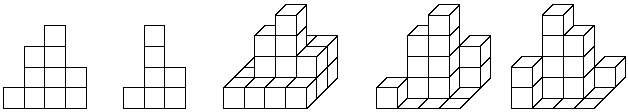

Home Page
F.A.Qs
Statistical Charts
Past Contests
Scheduled Contests
Award Contest
| Online Judge | Problem Set | Authors | Online Contests | User | ||||||
|---|---|---|---|---|---|---|---|---|---|---|
| Web Board Home Page F.A.Qs Statistical Charts | Current Contest Past Contests Scheduled Contests Award Contest | |||||||||
|
Language: Block Town
Description Children like playing with blocks (cube wooden bricks). They usually build high towers, but small Johny dreams of different plans. He is going to build a big town. His daddy has bought him a rectangular table; its width is K blocks and its length is L blocks exactly. Johny decided to project a plan of such a town before he starts building the town itself. He has drawn a square-shaped network on the table consisting of KxL squares. He wants to place the towers consisting of one or more blocks on some of the squares of the network drawn; the remaining squares will be empty. Because of the table being so large,Johny is not going to plan exactly for every square how many blocks he will put on it. He only wants to decide about front and right sight shapes of his town. He drew these two views (two-dimensional projections of the planned town) on a paper. You can see an example of these drawings and the adequate town made of wooden bricks in the pictures:
 Johny's daddy is afraid they don't have enough blocks to finish building Johny's planned town. You are asked for writing a program to compute the minimal and maximal amount of blocks with which a town corresponding to Johny's plans can be built. Moreover the program can decide about the possibility of building a town satisfying the views. Input The first line of input contains two positive integers K, L -- the width and the length of the table (expressed as numbers of bricks). Neither the width nor the length of the table is greater than 100000 bricks. The following lines of the input file contain the description of the front view of the town. The description consists of a series of heights of visible buildings on each square from the left to the right (the height is measured by the number of the blocks, too). There is only one number on each line, i.e. the number of the lines with the front view description of the town equals K -- the width of the table. Similarly the next L lines of the input file contain the right sight view of the town. The heights of the wooden block towers are now specified from the front line to the back line. You may suppose there is no building in the town with height exceeding 5000 blocks. The maximal number of blocks needed for building the entire town does not exceed 2000000000. Output Output contains only one line. If it is not possible to build a town with the front and right sight views given, only a text `No solution.' is written there. In the other case two numbers will be written on the line and separated by a single space. The first one is the minimal and the second one is the maximal amount of blocks small Johny can use to build his town in accordance with his project. Sample Input 4 3 1 3 4 2 1 4 2 Sample Output 10 21 Source |
[Submit] [Go Back] [Status] [Discuss]
All Rights Reserved 2003-2013 Ying Fuchen,Xu Pengcheng,Xie Di
Any problem, Please Contact Administrator